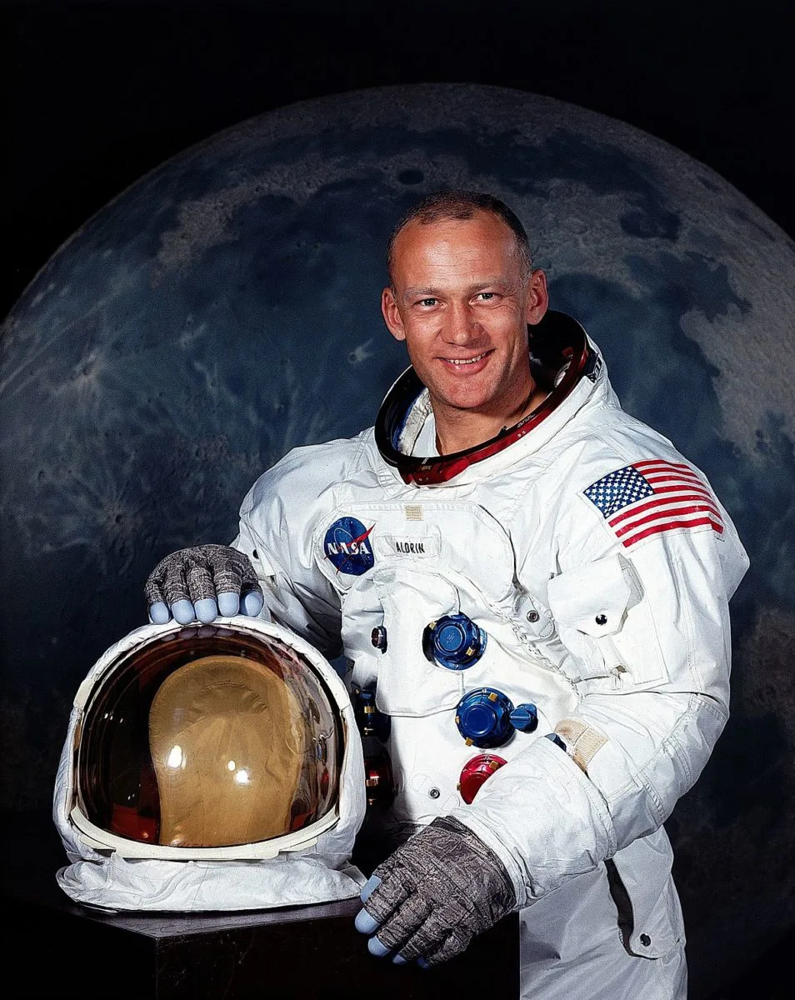
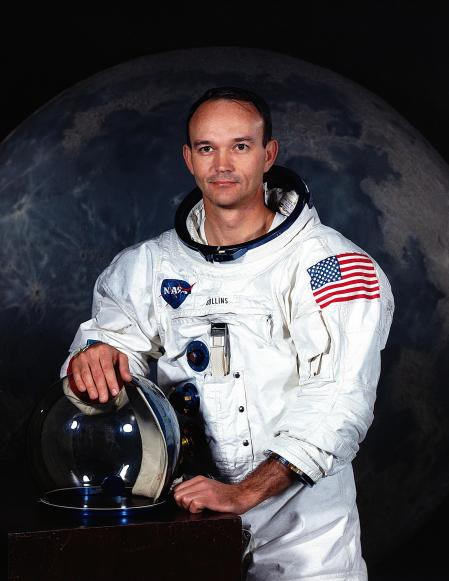
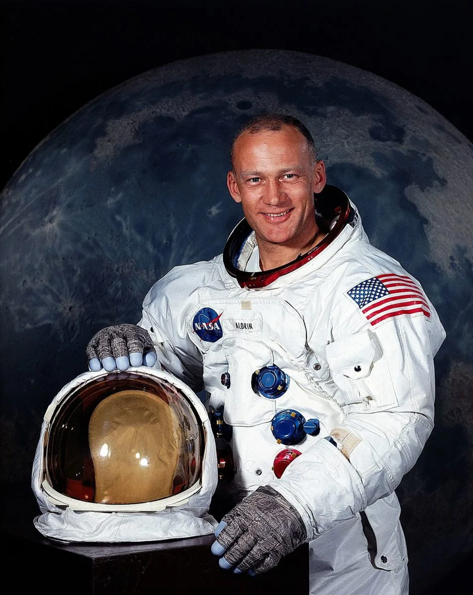
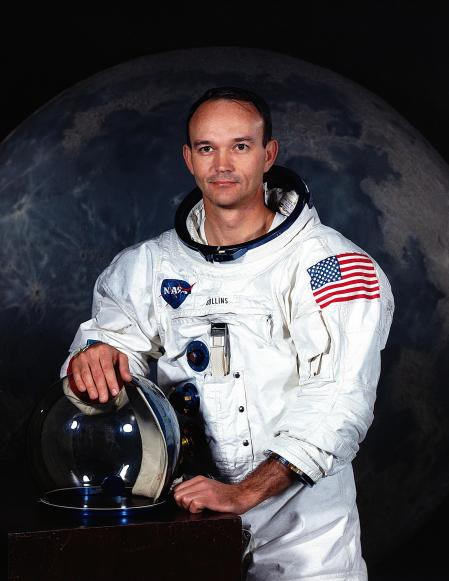

Apolo 11
Apolo 11 fue una misión espacial tripulada de Estados Unidos cuyo objetivo fue lograr que un ser humano caminara en la superficie de la Luna. La misión se envió al espacio el 16 de julio de 1969, llegó a la superficie de la Luna el 20 de julio de ese mismo año y al día siguiente logró que dos astronautas (Armstrong y Aldrin) caminaran sobre la superficie lunar. El 20 de julio de 1969 la misión norteamericana Apolo 11, colocó a los primeros hombres en la Luna: el comandante Neil Armstrong y el piloto Edwin F. Aldrin. Cuando el módulo Eagle alunizó en el Mar de la Tranquilidad las imágenes en vivo se siguieron en televisión por unas 600 millones de personas.
 


